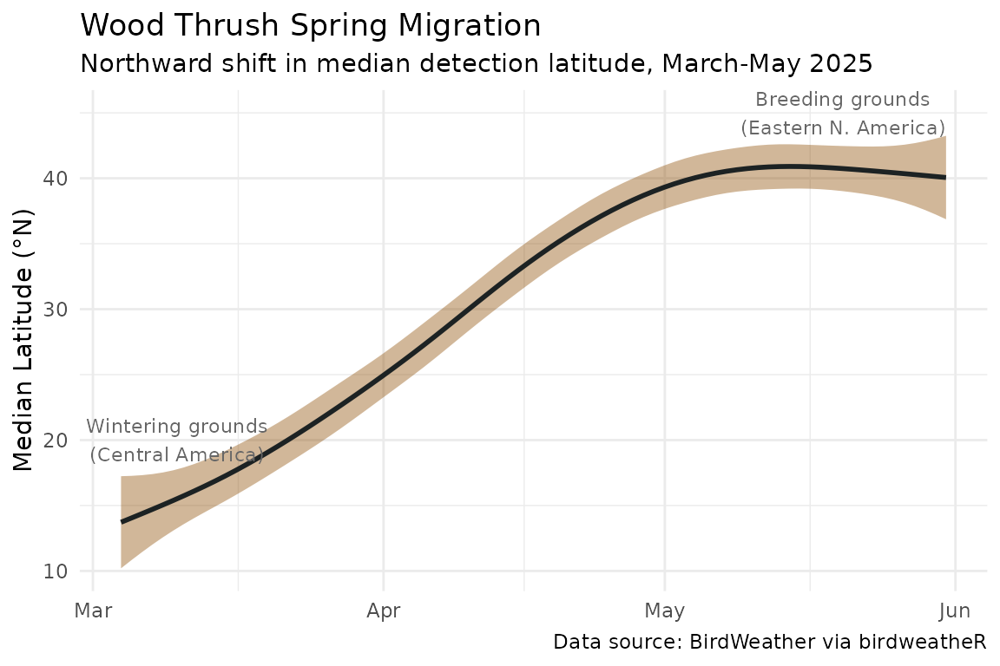
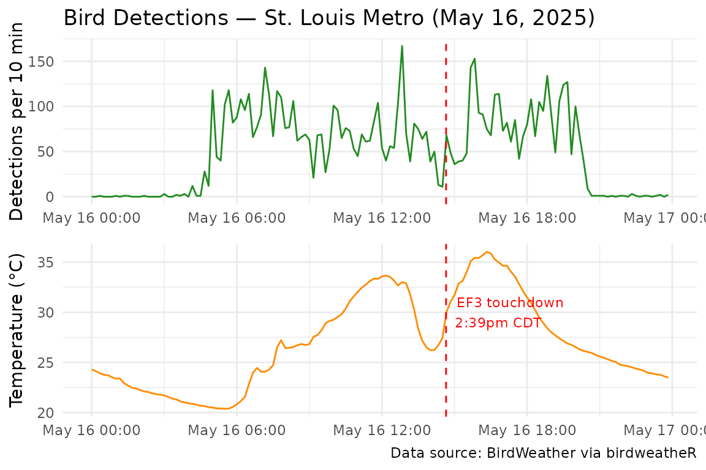
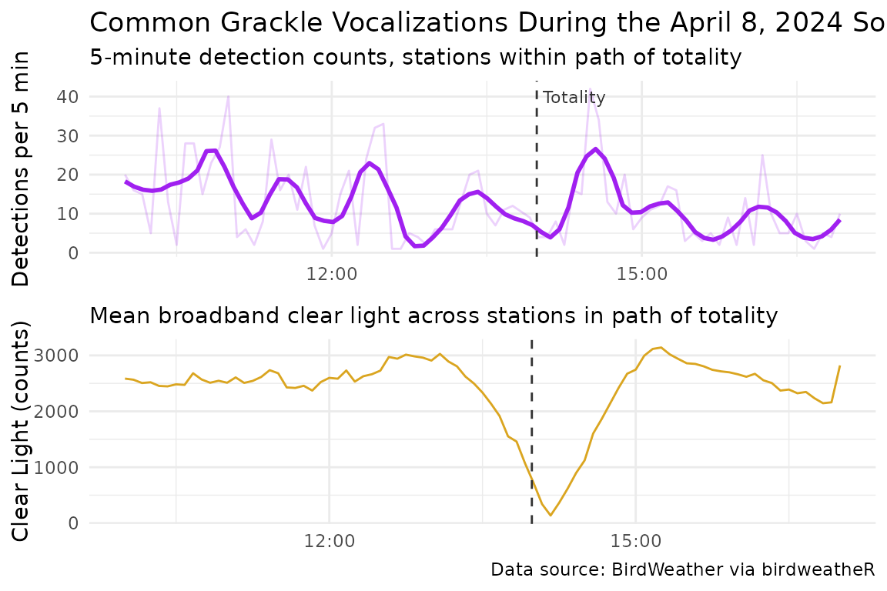

Getting Started with birdweatheR
getting-started.RmdIntroduction
BirdWeather is a global network of acoustic monitoring stations maintained and operated by volunteers that continuously record and automatically identify bird vocalizations using the BirdNET neural network. As of February 2026, the network comprises over 18,000 stations across six continents, collectively generating tens of millions of detections per month. Just recently, the database hit 2 billion detections! Unlike citizen science platforms that rely on human observers, BirdWeather stations operate continuously and autonomously — making the dataset uniquely suited to studying fine-grained temporal patterns in bird behavior, including responses to weather events, light cycles, and astronomical phenomena.
Currently, BirdWeather offers three options for accessing the
database: 1) A user-friendly GUI data explorer, 2) GraphQL API, and 3)
REST API. While the latter two are particularly powerful, not all users
are comfortable with API calls. birdweatheR provides an R
interface to the BirdWeather API, enabling researchers to download
detection data, explore species activity patterns, andintegrate on-board
sensor readings from BirdWeather PUC units — which record temperature,
barometric pressure, humidity, air quality, and spectral light levels
alongside acoustic detections.
Installation
# Install from GitHub
# install.packages("devtools")
devtools::install_github("BrentPease1/birdweatheR")Connecting to the API
All functions require an active API connection. No API KEY required. Establish a connection at the start of each session:
The connection is stored in a package-level environment and used automatically by all downstream functions. You do not need to pass it explicitly after the initial call.
Exploring the Platform
Before pulling raw detections, a few summary functions give a quick overview of the BirdWeather database.
Platform-wide summary
get_counts() returns a single-row summary of detections,
species, and stations for a given time period:
get_counts(
from = "2025-05-01T00:00:00.000Z",
to = "2025-05-02T00:00:00.000Z"
)#> detections species stations
#> 1 11190893 1664 3890Over 11 million detections from 1,664 species across 3,890 stations in a single 24-hour period illustrates the scale of the BirdWeather network.
Top species
get_top_species() returns the most frequently detected
species for a given period, with a breakdown of detection
confidence:
get_top_species(
limit = 10,
from = "2025-05-01T00:00:00.000Z",
to = "2025-05-02T00:00:00.000Z"
)#> species_id common_name scientific_name count almost_certain
#> 1 1 House Sparrow Passer domesticus 829043 828755
#> 2 35 Eurasian Blackbird Turdus merula 713296 713294
#> 3 134 House Finch Haemorhous mexicanus 519312 519242
#> 4 51 Common Chiffchaff Phylloscopus collybita 436480 436477
#> very_likely unlikely uncertain
#> 1 88 0 0
#> 2 2 0 0
#> 3 70 0 0
#> 4 3 0 0Discovering stations
get_stations() retrieves the full station network with
coordinates, country, and station type. This is useful for identifying
stations in a region of interest before pulling detections:
# Pull 10 stations
stations <- get_stations(limit = 10)
# Stations within a bounding box and time period
midwest_stations <- get_stations(
from = "2025-05-01T00:00:00.000Z",
to = "2025-05-02T00:00:00.000Z"
ne = list(lat = 49.0, lon = -80.0),
sw = list(lat = 36.0, lon = -97.0)
)midwest_stations returns 569 observations of 10
variables, including station name, type (e.g., “PUC”, see below),
longitude and latitude, and a station_id unique to the database that
could be helpful for other queries.
Species Detection Patterns
Finding species
find_species() searches the BirdWeather species database
by common or scientific name. This function allows for complete and
partial matches, even including wildcards (e.g., ’whip*’)
# Search by common name
find_species("Wood Thrush")
# Partial match
find_species("thrush")
# wildcard match
find_species("whip*")Time-of-day activity
get_tod_counts() returns detection counts binned by
30-minute intervals across a time period, revealing the diel activity
pattern of a species. Here we examine the American Robin (Turdus
migratorius) — a species well known for its early dawn and late
evening chorus:
robin_id <- find_species("American Robin")$species_id
robin_tod <- get_tod_counts(
species_id = robin_id,
from = "2025-05-01T00:00:00.000Z",
to = "2025-05-31T00:00:00.000Z"
)
library(ggplot2)
ggplot(robin_tod, aes(x = hour, y = count)) +
geom_col(fill = "tomato") +
scale_x_continuous(breaks = seq(0, 24, by = 3),
labels = paste0(seq(0, 24, by = 3), ":00")) +
labs(
title = "American Robin — Time of Day Activity",
subtitle = "May 2025, all BirdWeather stations",
x = "Hour of Day",
y = "Total Detections"
) +
theme_minimal()Contrasting that with a nocturnal species such as the Barred Owl (Strix varia) shows the power of continuous detections, creating a contrast with traditional sampling techniques and other avian databases:
baow_id <- find_species("Strix varia")$species_id
baow_tod <- get_tod_counts(
species_id = baow_id,
from = "2025-05-01T00:00:00.000Z",
to = "2025-05-31T00:00:00.000Z"
)
library(ggplot2)
ggplot(baow_tod, aes(x = hour, y = count)) +
geom_col(fill = "blue4") +
scale_x_continuous(breaks = seq(0, 24, by = 3),
labels = paste0(seq(0, 24, by = 3), ":00")) +
labs(
title = "Barred Owl — Time of Day Activity",
subtitle = "May 2025, all BirdWeather stations",
x = "Hour of Day",
y = "Total Detections"
) +
theme_minimal()One shortcoming of the TOD function, however, is when a species is
poorly detected. In this case, a manual approach would be required
(e.g., using get_detections)
Daily detection trends
get_daily_detection_counts() returns detection totals
aggregated by day, optionally broken down by species. This is useful for
visualizing seasonal trends without downloading raw detections:
daily <- get_daily_detection_counts( #ART 20 seconds
from = "2025-05-01T00:00:00.000Z",
to = "2025-05-31T00:00:00.000Z",
by_species = FALSE
)
ggplot(daily, aes(x = as.Date(date), y = daily_total)) +
geom_smooth(color = "steelblue", se = F) +
labs(
title = "Daily BirdWeather Detections",
x = NULL,
y = "Detections per Day"
) +
theme_minimal()This function can be a powerful summary function when combined with
station_ids, species_ids, or breaking down
by_species, which are all built-in arguments to the
function.
Raw Detections
For research, the most useful function will likely be
get_detections. This function allows for raw data downloads
from the BirdWeather database, where then the scientific questions are
seemingly endless.
get_detections
get_detections is a function that retrieves bird
detections from the BirdWeather API with optional filters. Importantly,
since we are dealing with millions of rows, the function handles
pagination automatically up to the user-specified limit. If no limit is
specified, the function will return the total number of detections
matching the query. Returns a fully flat data.table with all nested
fields (coords, species, station) expanded into individual columns.
Current functionality allows for filtering on: * Dates (beginning and end) * Stations * Types of Stations * Species * Continents * Countries * BirdNET Confidence Scores * Bounding Box * Download Limits (e.g., 1000 rows)
# Get detections for a date range
detections <- get_detections(
from = "2025-01-01T00:00:00.000Z",
to = "2025-01-02T00:00:00.000Z",
limit = 1000
)
# Filter by species name - if multiple matches are found, all are shown
# and the user is prompted to rerun with a more specific name
detections <- get_detections(
from = "2025-05-01T00:00:00.000Z",
to = "2025-05-02T00:00:00.000Z",
species_names = "Eastern Whip-poor-will",
limit = 1000
)
# For faster pulls, look up species ID first and pass it directly
ewpw_id <- find_species("Eastern Whip-poor-will")$species_id
detections <- get_detections(
from = "2025-05-01T00:00:00.000Z",
to = "2025-05-02T00:00:00.000Z",
species_ids = ewpw_id,
limit = 1000
)
# Filter by continent with a confidence threshold
detections <- get_detections(
from = "2025-01-01T00:00:00.000Z",
to = "2025-01-02T00:00:00.000Z",
continents = "North America",
confidence_gte = 0.9,
limit = 1000
)returned columns
get_detections will return the following columns:
| Column | Description |
|---|---|
id |
Detection ID |
timestamp |
Detection timestamp in station timezone |
confidence |
BirdNET confidence |
score |
Calculated identification likelihood score |
species_id |
Species ID |
common_name |
Species common name |
scientific_name |
Species scientific name |
station_id |
Station ID |
station_name |
Station name |
station_type |
Station type |
station_country |
Country |
station_continent |
Continent |
station_state |
State / province |
station_lat, station_lon
|
Station coordinates |
location_privacy |
fuzzy lat/lons |
Applications of BirdWeather
Migration Phenology
One of the most powerful applications of BirdWeather data is tracking the phenology of migratory species at continental scale. Because BirdWeather stations operate continuously, the dataset captures the high-temporal resolution information, such as northward progression of spring migrants.
Here we use Wood Thrush (Hylocichla mustelina), a
long-distance Neotropical migrant that winters in Central America and
breeds across eastern North America, to illustrate how
get_detections() can reveal migratory timing across
latitudes.
The woth dataset bundled with this package contains
569,000 Wood Thrush detections from North American BirdWeather stations
during spring migration (March–May 2025), filtered to detections with
confidence ≥ 0.6.
library(birdweatheR)
library(data.table)
library(ggplot2)
data(woth)
# To reproduce this dataset from the API:
# connect_birdweather()
# woth_id <- find_species("Wood Thrush")$species_id
# woth <- get_detections(
# from = "2025-03-01T00:00:00.000Z",
# to = "2025-05-31T00:00:00.000Z",
# species_ids = woth_id,
# confidence_gte = 0.6,
# continents = "North America"
# )We calculate the median latitude of all detections for each day. As birds depart their Central American wintering grounds and move northward, the median latitude of detections shifts from roughly 15°N in early March to over 40°N by mid-May:
woth[, date := as.Date(timestamp)]
median_lat <- woth[, .(median_lat = median(station_lat, na.rm = TRUE)),
by = date]
ggplot(median_lat, aes(x = date, y = median_lat)) +
geom_smooth(color = "#1C2223", fill = "#8D4C00") +
annotate("text",
x = as.Date("2025-03-10"),
y = 20,
label = "Wintering grounds\n(Central America)",
size = 3, color = "gray40") +
annotate("text",
x = as.Date("2025-05-20"),
y = 45,
label = "Breeding grounds\n(Eastern N. America)",
size = 3, color = "gray40") +
labs(
title = "Wood Thrush Spring Migration",
subtitle = "Northward shift in median detection latitude, March-May 2025",
x = NULL,
y = "Median Latitude (°N)",
caption = "Data source: BirdWeather via birdweatheR"
) +
theme_minimal()
The smooth northward shift from ~15°N to ~41°N over approximately ten weeks closely tracks published Wood Thrush migration chronology, demonstrating that BirdWeather acoustic detections can recover continent-scale movement patterns from passively collected data alone.
Weather Events and Sensor Data
BirdWeather PUC (Portable Universe Codec) units, BirdWeather’s AI-powered bioacoustics platform, in addition to being equipped with dual microphones, WiFi, and GPS, are also packaged with on-board environmental sensors that record temperature, humidity, barometric pressure, air quality index, and sound pressure level at approximately 42-second intervals. This onboard sensor data enables researchers to directly link bird vocal activity to local environmental conditions — a capability not available in any other large-scale acoustic monitoring dataset.
The May 15–16, 2025 Tornado Outbreak
On May 15–16, 2025, a major tornado outbreak produced 61 tornadoes across the Midwest and Ohio Valley in the United States, including a destructive EF3 tornado that struck the Greater St. Louis metropolitan area at 2:39 pm CDT on May 16. The outbreak caused 26 deaths and approximately $5.9 billion in damages.
The stl_storm_May2025 dataset contains detections from
eight PUC stations in the St. Louis metro area during May 12–18, 2025.
The stl_env_May2025 dataset contains concurrent
environmental sensor readings from those same stations.
# To reproduce from the API:
# connect_birdweather()
# stl_storm_May2025 <- get_detections(
# from = "2025-05-12T00:00:00.000Z",
# to = "2025-05-18T00:00:00.000Z",
# ne = list(lat = 38.95, lon = -89.85),
# sw = list(lat = 38.35, lon = -90.75),
# station_types = "puc"
# )
#
# station_ids <- unique(stl_storm_May2025$station_id)
# env_list <- lapply(station_ids, function(sid) {
# get_environment_data(
# station_id = sid,
# from = "2025-05-14T00:00:00.000Z",
# to = "2025-05-17T00:00:00.000Z"
# )
# })
# stl_env_May2025 <- data.table::rbindlist(env_list, fill = TRUE)We focus on May 16 itself, plotting bird detections and mean temperature across all eight stations in 10-minute intervals. The sharp temperature drop associated with the tornado’s passage is clearly visible, coinciding with a spike in acoustic detections around the time of EF3 touchdown:
# Parse detection timestamps
stl_storm_May2025[, datetime := as.POSIXct(timestamp,
format = "%Y-%m-%dT%H:%M:%S", tz = "America/Chicago")]
# 10-minute detection counts
ten_min_dets <- stl_storm_May2025[, .(det_count = .N),
by = .(interval = as.POSIXct(format(
datetime - as.numeric(datetime) %% 600,
"%Y-%m-%d %H:%M:%S"), tz = "America/Chicago"))]
stl_env_May2025[, datetime := as.POSIXct(timestamp,
format = "%Y-%m-%dT%H:%M:%S", tz = "America/Chicago")]
# 10-minute temperature averages
ten_min_env <- stl_env_May2025[, .(mean_temp = mean(temperature, na.rm = TRUE)),
by = .(interval = as.POSIXct(format(
datetime - as.numeric(datetime) %% 600,
"%Y-%m-%d %H:%M:%S"), tz = "America/Chicago"))]
# Merge and filter to May 16
ten_min_combined <- merge(ten_min_dets, ten_min_env, by = "interval", all = TRUE)
may16_start <- as.POSIXct("2025-05-16 00:00:00", tz = "America/Chicago")
may16_end <- as.POSIXct("2025-05-16 23:59:59", tz = "America/Chicago")
ten_min_may16 <- ten_min_combined[interval >= may16_start & interval <= may16_end]
# Intervals with no detections should be 0, not NA
ten_min_may16[is.na(det_count), det_count := 0]
library(cowplot)
p1 <- ggplot(ten_min_may16, aes(x = interval, y = det_count)) +
geom_line(color = "forestgreen") +
geom_vline(xintercept = as.POSIXct("2025-05-16 14:39:00", tz = "America/Chicago"),
color = "red", linetype = "dashed") +
labs(title = "Bird Detections — St. Louis Metro (May 16, 2025)",
x = NULL, y = "Detections per 10 min") +
theme_minimal()
temp_max <- max(ten_min_may16$mean_temp, na.rm = TRUE)
if (!is.finite(temp_max)) temp_max <- 25
p2 <- ggplot(ten_min_may16, aes(x = interval, y = mean_temp)) +
geom_line(color = "darkorange") +
geom_vline(xintercept = as.POSIXct("2025-05-16 14:39:00", tz = "America/Chicago"),
color = "red", linetype = "dashed") +
annotate("text", x = as.POSIXct("2025-05-16 14:39:00", tz = "America/Chicago"),
y = 30,
label = "EF3 touchdown\n2:39pm CDT",
color = "red", hjust = -0.1, size = 3) +
labs(x = NULL, y = "Temperature (°C)",
caption = "Data source: BirdWeather via birdweatheR") +
theme_minimal()
plot_grid(p1, p2, ncol = 1, align = "v")
The get_environment_data() function retrieves sensor
readings for any PUC station and time window, enabling researchers to
pair environmental context with acoustic detections at fine temporal
resolution.
Astronomical Events
In addition to environmental sensors, PUCs record light-levels at the sensor, including broadband light levels, near-infrared light, and the ability to isolate bands f1-f8. The combination of acoustic detections and on-board light sensors makes BirdWeather data uniquely suited to studying how birds respond to rapid changes in light levels — including those caused by solar eclipses.
The April 8, 2024 Total Solar Eclipse
On April 8, 2024, a total solar eclipse crossed North America along a path running from Texas northeast through the Ohio Valley. At stations within the path of totality, daylight was completely extinguished for up to four minutes around 2:00 pm local time.
The total_eclipse dataset contains detections from PUC
stations within an eclipse path bounding box during April 8, 2024. The
eclipse_light_data dataset contains concurrent light sensor
readings from those same stations.
# To reproduce from the API:
# connect_birdweather()
# total_eclipse <- get_detections(
# from = "2024-04-08T00:00:00.000Z",
# to = "2024-04-09T00:00:00.000Z",
# ne = list(lat = 42.639347, lon = -79.672852),
# sw = list(lat = 34.331340, lon = -94.570313),
# confidence_gte = 0.6,
# station_types = "puc"
# )
#
# station_ids <- unique(total_eclipse$station_id)
# light_list <- lapply(station_ids, function(sid) {
# get_light_data(
# station_id = sid,
# from = "2024-04-08T00:00:00.000Z",
# to = "2024-04-09T00:00:00.000Z"
# )
# })
# eclipse_light_data <- data.table::rbindlist(light_list, fill = TRUE)Rather than relying on an external shapefile, we use the PUC light sensor data itself to identify stations that experienced totality — defined here as stations where broadband light levels dropped below 10% of their morning baseline during the eclipse window:
eclipse_light_data[, datetime := as.POSIXct(timestamp,
format = "%Y-%m-%dT%H:%M:%S", tz = "America/Chicago")]
total_eclipse[, datetime := as.POSIXct(timestamp,
format = "%Y-%m-%dT%H:%M:%S", tz = "America/Chicago")]
# Morning baseline (10:00-11:00 am)
station_baselines <- eclipse_light_data[
datetime >= as.POSIXct("2024-04-08 10:00:00", tz = "America/Chicago") &
datetime <= as.POSIXct("2024-04-08 11:00:00", tz = "America/Chicago"),
.(baseline = mean(clear, na.rm = TRUE)), by = station_id]
# Minimum light during totality window (1:45-2:15 pm)
station_min <- eclipse_light_data[
datetime >= as.POSIXct("2024-04-08 13:45:00", tz = "America/Chicago") &
datetime <= as.POSIXct("2024-04-08 14:15:00", tz = "America/Chicago"),
.(min_clear = min(clear, na.rm = TRUE)), by = station_id]
totality_ids <- merge(station_baselines, station_min, by = "station_id")[
min_clear / baseline < 0.10, station_id]
message(length(totality_ids), " stations identified within path of totality")Of the stations in the bounding box, 25 experienced a light drop of >90%, confirming they were likely within the path of totality.
We then compare broadband light levels with Common Grackle (Quiscalus quiscula) vocalization rates across these stations. Common Grackle is a highly vocal diurnal species with peak activity during midday — making it a sensitive indicator of unusual light changes:
# 5-minute bin helper
bin5 <- function(dt) {
as.POSIXct(
paste0(format(dt, "%Y-%m-%d %H:"),
sprintf("%02d", (as.integer(format(dt, "%M")) %/% 5) * 5),
":00"),
tz = "America/Chicago"
)
}
# Filter to daytime window and totality stations
eclipse_day_light <- eclipse_light_data[
station_id %in% totality_ids &
datetime >= as.POSIXct("2024-04-08 10:00:00", tz = "America/Chicago") &
datetime <= as.POSIXct("2024-04-08 17:00:00", tz = "America/Chicago")
]
eclipse_day_dets <- total_eclipse[
station_id %in% totality_ids &
datetime >= as.POSIXct("2024-04-08 10:00:00", tz = "America/Chicago") &
datetime <= as.POSIXct("2024-04-08 17:00:00", tz = "America/Chicago") &
common_name == "Common Grackle"
]
# Bin to 5 minutes
light_bins <- eclipse_day_light[,
.(mean_clear = mean(clear, na.rm = TRUE)),
by = .(bin = bin5(datetime))]
det_bins <- eclipse_day_dets[,
.(det_count = .N),
by = .(bin = bin5(datetime))]
library(cowplot)
p1 <- ggplot(det_bins, aes(x = bin, y = det_count)) +
geom_line(color = "purple", alpha = 0.2) +
geom_smooth(color = "purple", se = FALSE, span = 0.15) +
geom_vline(
xintercept = as.POSIXct("2024-04-08 13:59:00", tz = "America/Chicago"),
color = "gray20", linetype = "dashed"
) +
annotate("text",
x = as.POSIXct("2024-04-08 13:59:00", tz = "America/Chicago"),
y = max(det_bins$det_count, na.rm = TRUE) * 0.95,
label = "Totality", color = "gray20", hjust = -0.1, size = 3) +
labs(
title = "Common Grackle Vocalizations During the April 8, 2024 Solar Eclipse",
subtitle = "5-minute detection counts, stations within path of totality",
x = NULL,
y = "Detections per 5 min"
) +
theme_minimal()
p2 <- ggplot(light_bins, aes(x = bin, y = mean_clear)) +
geom_line(color = "goldenrod") +
geom_vline(
xintercept = as.POSIXct("2024-04-08 13:59:00", tz = "America/Chicago"),
color = "gray20", linetype = "dashed"
) +
labs(
subtitle = "Mean broadband clear light across stations in path of totality",
x = NULL,
y = "Clear Light (counts)",
caption = "Data source: BirdWeather via birdweatheR"
) +
theme_minimal()
plot_grid(p1, p2, ncol = 1, align = "v")
The light sensor data clearly captures the eclipse — broadband light levels collapse to near zero at totality before recovering to normal afternoon levels. The concurrent reduction in Common Grackle vocalizations illustrates how BirdWeather’s integrated acoustic and environmental sensing can be used to study behavioral responses to rapid environmental perturbations.
Further Reading
The analyses demonstrated in this vignette represent a small subset of what is possible with the BirdWeather dataset. For an example of large-scale ecological synthesis using BirdWeather detections, see Pease & Gilbert (2025), who used over 60 million BirdWeather detections across 583 diurnal species to demonstrate that light pollution prolongs avian vocal activity by up to 50 minutes in the brightest landscapes (Science, 387, 848–853).
Additionally, a full analysis of the 2023 Annular and 2024 Total Eclipses using data from the Eclipse Soundscapes project and BirdWeather can be found in Gilbert et al., 2026
For questions, bug reports, or feature requests, please visit the package repository at github.com/BrentPease1/birdweatheR.